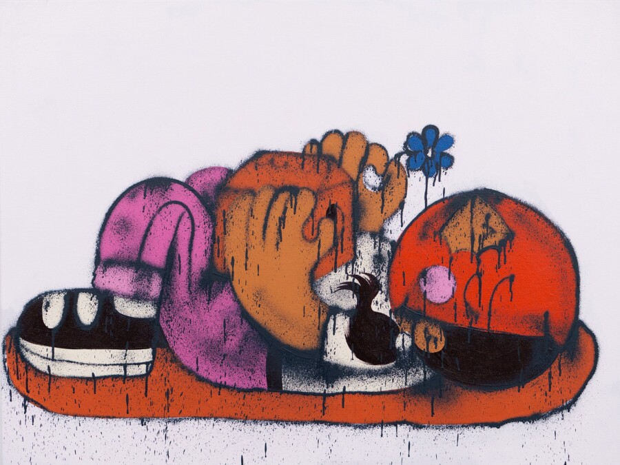

Sentrock Print Release + Closing Reception
Stop by Joy Machine for our limited-edition print release with Sentrock. ‘Better Days Ahead’ is a 12-color screen print available in two variants with a number of hand-finished monoprints. There are a total of 50 prints in the edition. Doors open at 5 p.m., and prints will be available on a first-come, first-served basis.
Also, celebrate Joy Machine’s first birthday with cake from the mighty Emily Spurlin! 🎂 This will mark the close of our incredible show ‘World in My Eyes’ with Kayla Mahaffey and Sentrock.